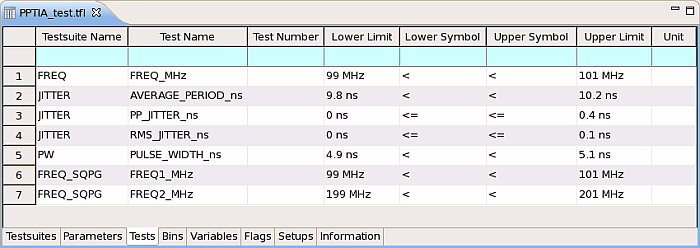

Tests page
The Tests page shows result limit ranges for the tests defined in the test method. You can define more than one limit for a test suite.
If you define a limit range before programming the test method (via the Parameter and Limit Table dialog window), it is automatically displayed in the Tests page once any test suite in the testflow uses the test method. You cannot delete such limits.
You can also add or delete limits (including six default limits) for any test suite on this page that is based on a test method.
The content of the Test Name column is taken from the
testname parameter of the TEST API, displaying the
test to which the limit applies.

Functional changes
- Introduced before SmarTest 6.3.2
- SmarTest 6.5.2: Tests page replaces Limits page.
- SmarTest 7.0.3: Removed test number manager